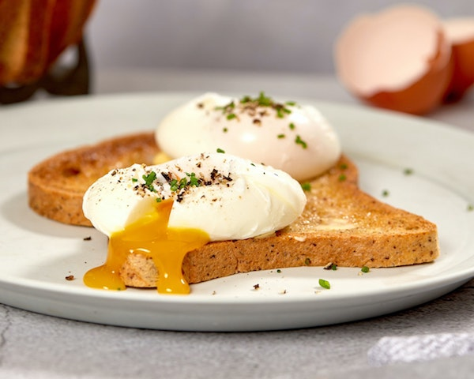

The Perfect Poached Egg

How to Perfectly Poach an Egg
Description:
The humble poached egg is the cornerstone of cooking skill tests across the world. Use this recipe to help improve your future poached eggs.
Ingredients:
- 1 egg
- 4 cups of water in a pot
- 1 teaspoon of salt
- 1/2 teaspoon of pepper
- 1 tablespoon of white vinegar
- 1 slice of your favorite bread, toasted and buttered
Steps:
- Bring the water to a rolling boil
- Crack the egg into a cup
- Add the salt, pepper, and white vinegar to the boiling water
- Whisk the water for 30 seconds until a strong circular current of water has developed
- Drop the egg into the center of the boiling water
- Allow the egg to spin in the water for 90 to 120 seconds
- Gently remove the poached egg from the water and place on to paper towel
- Dab the egg with paper towel to remove any excess water
- Place the egg on to the buttered toast and enjoy